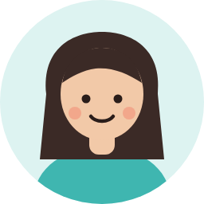
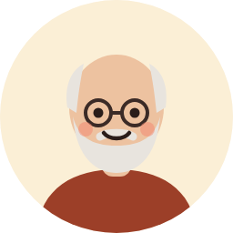
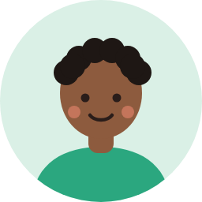
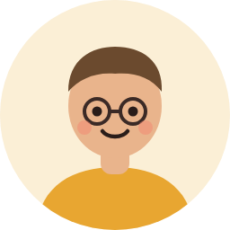
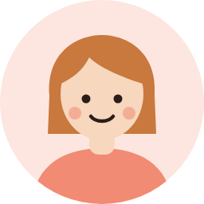
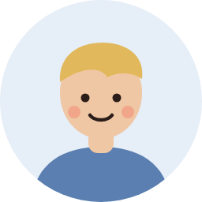

L’histoire de Léa et d’un livre que son amie Sofia lui a conseillé.
Notre devise
Vis-le, enregistre-le, partage-le.
Trois gestes simples, et tout ce que Kulky en fait pour toi.
1. Je visVis-le.
Un roman qui t’a tenu éveillé·e, un film en plein air, un concert dans une petite salle, une expo un dimanche. Tout compte, et tout se retrouve au même endroit.
LivresRomans, BD, essais, poésie
CinéEn salle ou à la maison
ConcertsDu festival à la petite salle
ExposMusées, galeries, street art
2. J’enregistreEnregistre-le.
En trente secondes, et sans note sur 5. Pour ne plus jamais oublier ce que tu as aimé, et ce que ça t’a fait vivre.
Les Misérableshier
Le Voyage dans la Lunemars
Les Nuits Jaunesjanv.
Ta mémoire culturelle« C’était quoi, ce livre que j’avais adoré ? » Tout est dans ton journal, avec ce que tu en avais dit.
14livres
9films
5concerts
3expos
Ton année, en chiffres et en storiesTon mois le plus culturel, tes coups de cœur, ton bilan à partager en fin d’année.

« La scène de l’évêque… »

« Attends les égouts ! »
p. 1p. 120p. 480fin
Où j’en suis, sans spoilerAvance dans ton livre et découvre les mots de tes amis à la bonne page.
✨27 émotions plutôt que des étoilesCoup de cœur, émerveillé·e, mort·e de rire, encore habité·e… On dit ce qu’on a ressenti, pas une note.📸Ta photo souvenirAjoute ta photo du concert ou de l’expo à ta carte.
3. Je partagePartage-le.
La culture, c’est meilleur à plusieurs. Avec Kulky, tu encourages, tu conseilles, tu organises, tu découvres.
J’encourageUn Kulkoko pour applaudir, un commentaire avec la case anti-spoiler.
Je conseille« Léa a pensé à toi », même à un ami qui n’a pas encore Kulky. Et ton conseil voyage de main en main.
On y va ensemble ?Les Nuits Jaunes · samedi 21 h
Partante !

Partant !
J’organise« Ça me tente », puis « On y va ensemble ? » avec une date, et les rappels la veille.

Hugoa lu Monte-Cristo

Léaa lu Monte-Cristo
Toi aussi, tu l’as lu !
Je découvre qui a vécu la même choseLes croisés : Kulky te signale les amis qui ont lu, vu ou écouté la même chose que toi.
Kulkoko · 12
Le Kulkoko
Fais connaissance

Tu es qui, toi ?
Je suis un Kulkoko !
Un quoi ?
Un K qui applaudit. Quand ton amie finit un livre ou sort d’un concert, tu m’envoies, et je file l’applaudir de ta part.
Comme un « j’aime » ?
En mieux : je danse. Pas de pouce, pas de cœur, juste un bravo. Comme les encouragements après une course, mais pour la culture.
L’esprit Kulky
Ce qu’on ne trouve que sur Kulky
Célébrer, pas noterPas d’étoiles ni de note sur 5. On raconte ce que l’œuvre nous a fait vivre.
Des amis, pas un algorithmeLes conseils viennent des gens qui te connaissent, avec un petit mot.
Zéro spoilerLes mots de tes amis se débloquent à la bonne page. Les commentaires qui dévoilent la fin sont cachés.
Comme pour le sport, mais pour la culture
Les sportifs ont leurs applis pour partager leurs sorties et s’encourager. La culture méritait la sienne.
🏃Une course
📖Un livre, un film, un concert
👍Des encouragements
👏Le Kulkoko
📈Tes kilomètres de l’année
✨Ton année culturelle
🗺️Un parcours partagé
💭Un conseil qui voyage
La fondatrice
C’est moi, la fondatrice
Je suis mes sorties sportives sur mon téléphone depuis des années. Un jour, je me suis dit : pourquoi pas ma culture ? Les livres qui m’ont marquée, les concerts avec mes amis, les expos du dimanche… Alors j’ai appris à coder, et j’ai créé Kulky.
Développé à ToulouseAutodidacteEntrepreneuriat au féminin
Et toi, qu’as-tu vécu cette semaine ?
Kulky est gratuit. Crée ton compte en moins d’une minute, et invite tes amis.